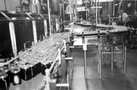

What is the Food Industry?
Canola Industry
Meat Industry
Milk Industry
Wheat Industry
Biotechnology
and Food
|
The food producing industry grows processes, transports and distributes our food stuffs. It accounts for about 20 percent of the gross national product and supplies work for about 25 percent of the working population of North America. Canadian food and agricultural products are in high demand abroad because they are considered to be of high quality and safe. The Agrifood industry is an important exporter of Canadian products. Did you know that every billion dollars of exports creates 7500 jobs here in Canada. By the year 2000, it is the industry's goal that our exports should top $20 billion a year. Saskatchewan's food industry employs over 8000 people and is dominated by meat production and processing. New industries involving value-added processing and biotechnology are starting to grow. |
|
What is the Agri-food Industry?
 The agri-food industry grows, processes, packages, markets and distributes our food. If we consider a common food stuff like butter. The industry involves the rearing of the milk cow, the milking operation, the transport of milk to the dairy, the processing of milk fat to butter, the packaging and distribution to the supermarket shelves and even includes the person involved in checking out your groceries. It is a huge operation involving one in every five Canadians.
The Canola Industry Canola has become a very important crop in Saskatchewan. Although most of the crop is exported as seed. The crushing and oil processing industries are growing. Canola oil is one of the most nutritious and "healthy" edible oils. Canola meal is a good source of livestock feed.
The Milk Industry
|
|
The Meat Industry
The meat industry is one of the largest food industries in Saskatchewan. From feed lots to meat packing, this industry employs the largest number of people in the Province. Although cattle production and processing has dominated the meat industry for many years, Saskatchewan is about to double its hog and pork industry to harvest six million or more hogs annually.
The Wheat Industry
Biotechnology and Food
There is no doubt that Biotechnology is a hot topic both on TV and in print. From cloning to bioinsecticides, agriculture and food is at the centre of a hot debate on the rights and wrongs of "messing with genes". Check here and use your own judgement about biotechnology. |
 Milk is an important nutritious product in its raw form. Through various processes of separation, heating and fermentation a wide range of products is produced including butter, cheese, yoghurt, and of course, ice-cream. Did you know that it takes 22.8 kg of milk to make one kg of butter? Milk is the most legally controlled of all foodstuffs with regulations that control fat content, total solids and additives. Dairy farms also come under laws that cover sanitary conditions and animal care.
Milk is an important nutritious product in its raw form. Through various processes of separation, heating and fermentation a wide range of products is produced including butter, cheese, yoghurt, and of course, ice-cream. Did you know that it takes 22.8 kg of milk to make one kg of butter? Milk is the most legally controlled of all foodstuffs with regulations that control fat content, total solids and additives. Dairy farms also come under laws that cover sanitary conditions and animal care. Wheat production is most linked with Saskatchewan, "the bread basket of the world". Almost half of Saskatchewan's agricultural activity is wheat related. Wheat also accounts for a significant amount of Agricultural exports. There are also numerous secondary and tertiary industries related to wheat such as milling and baking.
Wheat production is most linked with Saskatchewan, "the bread basket of the world". Almost half of Saskatchewan's agricultural activity is wheat related. Wheat also accounts for a significant amount of Agricultural exports. There are also numerous secondary and tertiary industries related to wheat such as milling and baking.